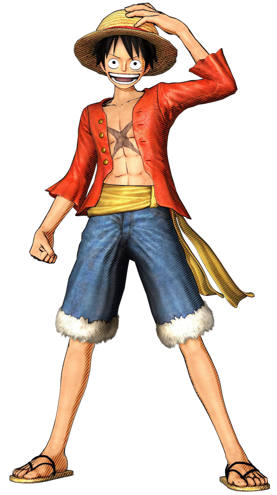
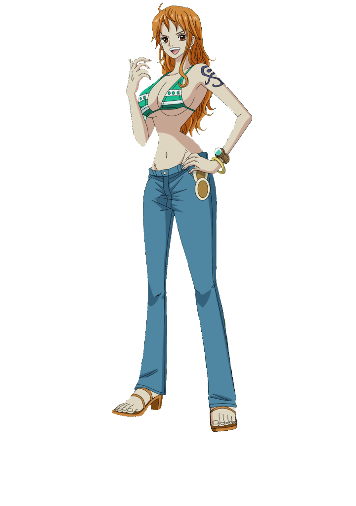
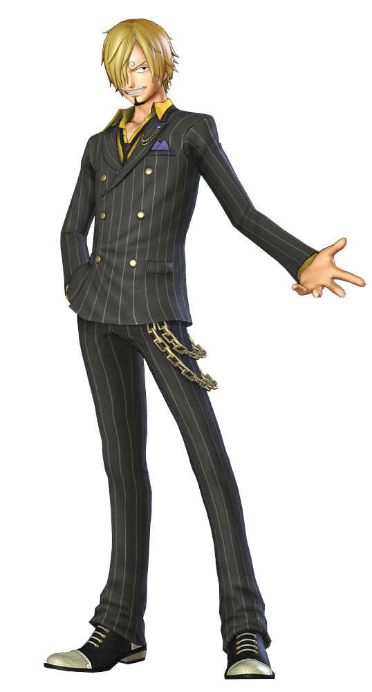
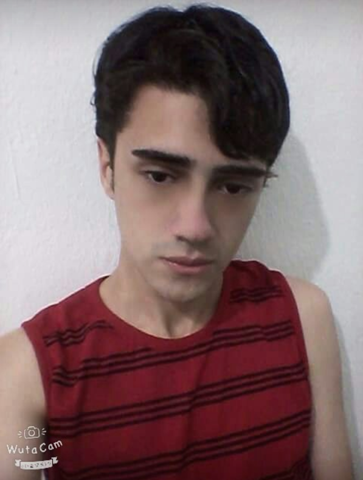

|  |
LuffyMonkey D. Luffy, também conhecido como "Luffy do Chapéu de Palha" ou "Chapéu de Palha", é um pirata e o principal protagonista do anime e mangá One Piece. Ele é o fundador e o capitão do cada vez mais infame e poderoso Piratas do Chapéu de Palha, bem como um de seus quatro principais lutadores. Seu sonho de vida é se tornar o Rei dos Piratas, encontrando o lendário tesouro deixado pelo falecido Rei dos Piratas, Gol D. Roger. Ele acredita que ser o Rei dos Piratas significa ter a maior liberdade do mundo. Após sua invasão em Totto Land e suas ações contra a Yonkou Big Mom, ele é atualmente considerado pela imprensa global como o Quinto Imperador. Ele é o filho do líder Revolucionário Monkey D. Dragon, neto paterno do herói da Marinha Monkey D. Garp, irmão jurado do falecido "Punhos de Fogo" Portgas D. Ace e do chefe de gabinete Revolucionário Sabo, e o filho adotivo de Curly Dadan. Luffy tem uma reputação mundial por causar problemas, desafiando os Shichibukai, a Marinha, e os Yonkou, e cometendo adicionalmente crimes e ações que foram consideradas ameaçadoras pelo Governo Mundial. Além disso, na maioria destes confrontos, ele emergiu como o vencedor. Ele ganhou a reputação de ser "imprudente" e, em alguns casos, "insano", depois de causar um incidente em Enies Lobby, agredir um Nobre Mundial no Arquipélago de Sabaody, entrar e escapar de Impel Down (causando indiretamente um tumulto em grande escala), e ingressar na Batalha de Marineford. Ele é, portanto, famoso por ser o único pirata conhecido por atacar deliberadamente não só às três instalações governamentais mais importantes, mas também por escapar vivo de todas elas. O fato adicional de que ele socou um Nobre Mundial com pleno conhecimento das consequências, bem como a sua herança, fez com que Luffy fosse rotulado como um "Futuro Elemento Perigoso", ganhando a ira do Almirante da Frota Akainu e do Quartel General da Marinha.[30] No início do Arco Levely, as realizações de Luffy foram compiladas, inflando muito sua infâmia, que já era imensa no começo. Isso inclui seu relacionamento como um irmão jurado do falecido comandante da segunda divisão dos Piratas do Barba Branca e filho de Gol D. Roger, Portgas D. Ace, e do chefe de gabinete do Exército Revolucionário, Sabo; a frota que não oficialmente se formou sob ele; a operação de infiltração no território da Big Mom, Totto Land, onde ele derrotou os Comandantes Doces Charlotte Cracker e Charlotte Katakuri, tentou o assassinato da própria Charlotte Linlin, destruiu seu castelo (não intencionalmente) e criou uma aliança com a Germa 66, os Piratas do Sol e os Piratas Fire Tank, antes de escapar depois que o assassinato falhou. Embora suas capacidades tenham sido um pouco exageradas pela imprensa, suas realizações foram grandes o suficiente para ele ser oficialmente intitulado o "Quinto Imperador do Mar". Estes atos, entre outras coisas, deram a ele sua recompensa atual de Bsymbol 1,500,000,000. Tendo recebido uma recompensa de Bsymbol 300,000,000 antes de sua chegada ao Arquipélago de Sabaody, Luffy é um dos onze piratas novatos que chegaram simultaneamente à Red Line com recompensas acima de Bsymbol 100,000,000, um grupo que passaria a ser referido como a "Pior Geração". |
|  |
NamiNami a "Gata Ladra" é uma pirata e a navegadora dos Piratas do Chapéu de Palha. Ela foi o terceiro membro da tripulação e o segundo a entrar, fazendo-o durante o Arco Orange Town. Ela era anteriormente membro dos Piratas do Arlong e juntou-se inicialmente aos Chapéus de Palha com a intenção de roubá-los, mas se um dos Chapéus de Palha de verdade depois de se rebelar contra Arlong no final do Arco Arlong Park. Ela tem uma recompensa de Bsymbol 66.000.000. |
|  |
Sanji"Perna Negra" Sanji, nascido como Vinsmoke Sanji, é o cozinheiro dos Piratas do Chapéu de Palha, assim como um antigo chefe de cozinha do Baratie. Ele também é o terceiro filho e a quarta criança da Família Vinsmoke, tornando-o um príncipe do Reino Germa,[26] até que ele oficialmente os renunciou duas vezes. Apesar de Sanji renunciar ao seu sobrenome Vinsmoke, o Governo Mundial o rotula como parte de seu nome em seu pôster de procurado. Ele é oficialmente o quinto membro da tripulação e o quarto a se juntar, fazendo isso no final do Arco Baratie. Uma vez que ele nasceu no North Blue, ele é o primeiro Chapéu de Palha a não se originar do East Blue. Ele é um dos quatro melhores lutadores da tripulação, ao lado de Luffy, Zoro e Jinbe. Seu sonho é encontrar o paraíso dos chefes, All Blue, sendo esse o lugar onde o East Blue, o West Blue, o North Blue e o South Blue se encontram, juntamente com sua vida selvagem. Devido aos eventos na Ilha Whole Cake, sua recompensa atual é de Bsymbol 330.000.000, dando-lhe a terceira maior recompensa na tripulação, ficando atrás apenas de Luffy e Jinbe. |
|
ZoroRoronoa Zoro, também conhecido como "Caçador de Piratas" Zoro, é o combatente dos Piratas do Chapéu de Palha e um ex-caçador de recompensas. Ele foi o primeiro membro a juntar-se à tripulação. Sua fama como mestre espadachim e sua grande força, juntamente com as ações de seu capitão, às vezes levaram os outros a acreditar que ele era o verdadeiro capitão da tripulação antes deste obter sua primeira recompensa, enquanto algumas pessoas acreditam que ele seja o imediato. Ele é um dos quatro melhores lutadores da tripulação, ao lado de Luffy, Sanji e Jinbe, e seu sonho é se tornar o maior espadachim do mundo. Zoro também é considerado como um dos doze piratas que são referidos como "A Pior Geração". Ele atualmente tem uma recompensa de Bsymbol 320,000,000. |
 |
UsoppÉ o Atirador dos Chapéus de Palha, e o ex-capitão do super pequeno grupo os Piratas Usopp. Quando Usopp foi introduzido pela primeira vez, ele foi muitas vezes (comicamente) rotulados como "mentiroso" pelos Chapéus de Palha, devido à "Uso" (うそ) em seu nome que significa "mentira" ou "falsidade". Ele nasceu na Vila Syrup, e foi mencionado pela primeira vez por Yasopp, seu pai. Ele é oficialmente o terceiro (não oficialmente quarto) membro da tripulação, e o terceiro a entrar no bando,e depois de sua saída do bando, voltando no final do Arco Pós-Enies Lobby. Sua primeira recompensa de 30,000,000 de Berries foi creditado ao seu apelido e alter-ego "Sogeking". Ele também é considerado um do trio "fraco" da tripulação, juntamente com Nami e Chopper. Depois de despertar Kenbunshoku Haki, [10] ele se tornou o quarto membro da tripulação do Chapéu de Palha a demonstrar e usar uma forma de Haki. Sua recompensa atual é de 200,000,000. Um enorme salto de seu original, devido ao seu papel de "God" por ter salvado todos aqueles escravos brinquedos no comércios subterrâneos de DoFlamingo, o que dá a ele a terceira maior recompensa do Bando, passando o titular antigo, Nico Robin. |
|  |
RomarinRomarin é um amigo nosso do curso, um cara muito maneiro e com muitas habilidades, tanto físicas quanto labiais, o moleque gosta de coronguetes quentes, ele usa um aplicativo de webnamoro chamado "kakaotalk". Se ele fosse um personagém de One piece, sua recompensa seria de mais de um trilhão de berries. Sim, ele é brabo! |